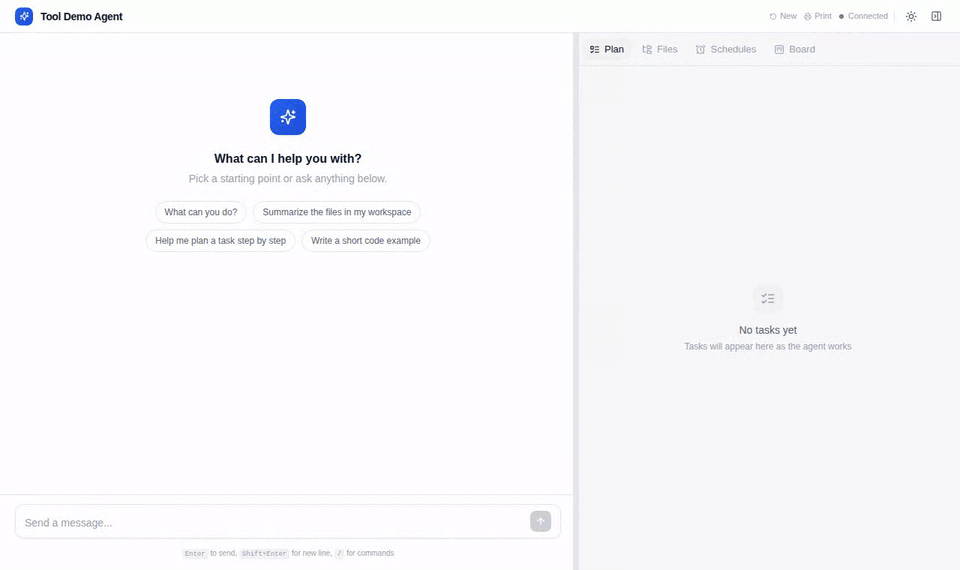
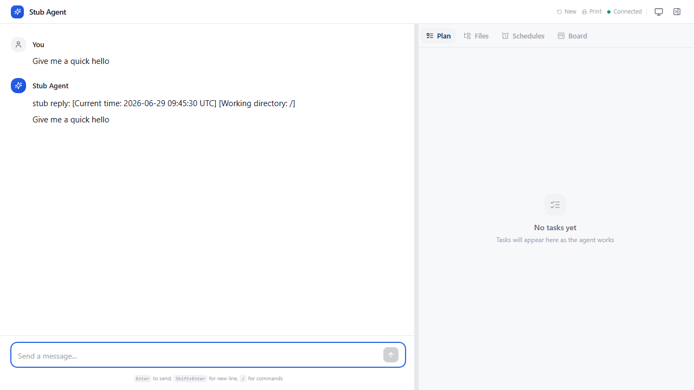
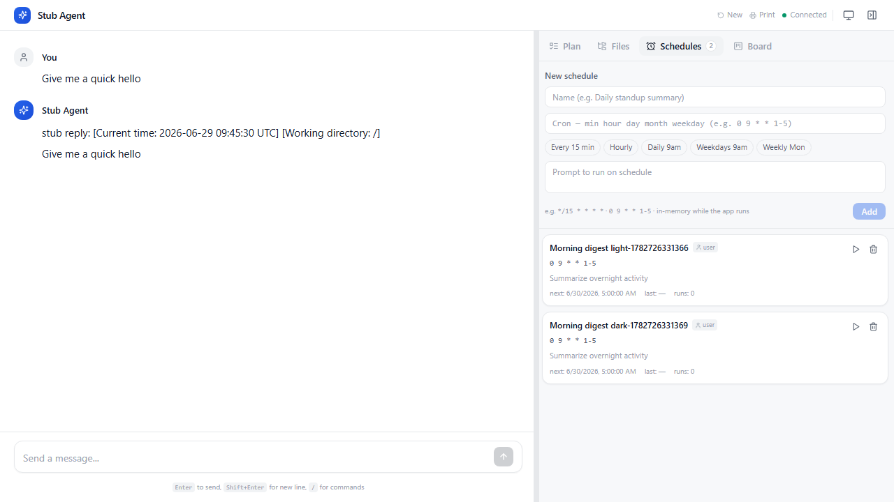
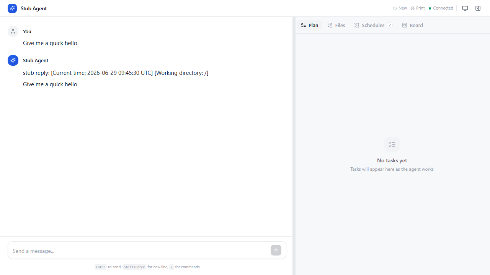
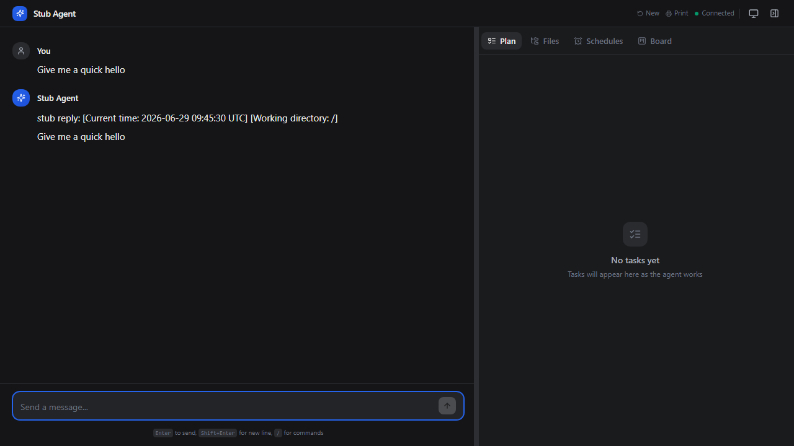

Web — langstage¶
The web stage: a chat workspace for your LangGraph agent with real-time streaming, a workspace file browser, a task board for background work, scheduled runs, and a canvas for reports. React frontend, FastAPI backend.
Quickstart¶
pip install langstage
langstage run --demo # keyless echo agent
langstage run --agent my_agent.py:graph # your agent
langstage run --agent my_agent.py:graph --port 8080 --theme dark --title "My Agent"
With no --agent and no configured spec, langstage run uses a built-in default
agent, which needs pip install "langstage[deepagents]" and ANTHROPIC_API_KEY.
From Python:
from langstage import CoworkApp
app = CoworkApp(
agent=your_langgraph_agent, # any LangGraph CompiledGraph
workspace="./workspace",
title="My Agent",
)
app.run()
run_app(agent=..., workspace=...) is the one-line shorthand. In a Jupyter notebook
the same app.run() serves on a background thread and returns a handle right away,
so the kernel stays usable; call server.stop() when you're done. In a notebook the
kernel's working directory is left alone. In a script or from the CLI, run() makes
the workspace the process's working directory, so your agent's relative file writes
land where the file browser shows them.
Demo¶

langstage run -a langstage_core.demo.tools:graph): a tool call, a reasoning turn, the file browser, and a background task on the Board.What it looks like¶


write_todos calls.

Highlights¶
- Streaming chat with inline tool calls (arguments, results, duration, status).
- Starter prompts: one-click suggestion chips on the empty screen.
- Rich inline content: HTML, Plotly, images, DataFrames, PDFs, JSON.
- Canvas panel, a persistent report surface. Opt in by attaching
CanvasMiddlewareto your agent. - File browser with a syntax-highlighted viewer and live change detection.
- Task board for background work, and schedules on cron.
- Human-in-the-loop approval dialogs. See Human-in-the-loop.
- Slash commands:
/save-workflow,/create-workflow,/run-workflow. - Theming (light, dark, auto, or your own CSS), optional HTTP Basic Auth, custom branding.
Bring your own agent¶
Point --agent at any compiled LangGraph graph. Chat, tool calls, the file browser,
the task board and schedules work immediately. A few features light up when your
agent follows a convention:
| Feature | How to unlock it |
|---|---|
| Plan tab | The agent calls write_todos (the deepagents convention). |
| Rich inline content | A tool returns the display_inline shape. |
| Canvas tab | Attach langstage.middleware.CanvasMiddleware. |
| Agent self-delegation and agent-created schedules | Add the host tools: from langstage import LANGSTAGE_TOOLS, then tools=[*my_tools, *LANGSTAGE_TOOLS]. |
| Human-in-the-loop review | LangGraph interrupt(), or deepagents' interrupt_on=.... |
Checkpointer. If your graph has none, LangStage attaches one, and at server
start it is a durable SQLite saver at <workspace>/.langstage/checkpoints.db. So
conversation memory, interrupts and the task review gate work, and survive a
restart. A graph that compiles in its own checkpointer keeps it.
Command-line tools¶
langstage check --agent my_agent.py:graph # static preflight: loads? what lights up?
langstage check --agent my_agent.py:graph --live # + one real turn; exit 1 if it errors
langstage check --agent my_agent.py:graph --json | jq -e '.loads and .checks.canvas.ok'
langstage chat --demo "hello" # one turn, reply on stdout, no server
langstage config # resolved config (also --json, --strict)
langstage init # a fully commented langstage.toml
- Without
--agent,checkandchatuse the same agentrunserves: the configured one (LANGSTAGE_AGENT_SPECor[agent] spec), or with nothing configured, the built-in default agent (which needs thedeepagentsextra). checkprints[ ok ]/[warn]lines for loading, the checkpointer, Canvas,write_todosand the host tools. The static checks need no key.chatadds the same per-message context the browser does (current time and the workspace path). Pass--no-contextfor a bare echo in scripts.config --strictexits1if anything in the config was ignored or degraded: a malformedlangstage.toml, a bad value, an unknown key. See Configuration.
Task board¶
The Board tab delegates work to background copies of your agent while you keep
chatting. There is no extra infrastructure: tasks live in a local SQLite file
(<workspace>/.langstage/tasks.db, so the board survives a restart) and run on an
in-process worker pool built on the core task engine.
- A task moves
queued → ongoing → review → done. Cancel or retry from any card. - Click a card to live-tail the agent's full stream, approve or reject a task paused for review, or send a follow-up.
- The default agent can delegate to itself with five tools (
start_async_task,check_async_task,list_async_tasks,update_async_task,cancel_async_task). Give a custom agent the same withLANGSTAGE_TOOLS(orlangstage_core.tasks.TASK_TOOLSfor just the task tools). Spawned tasks link to their parent on the board. - Concurrency is
LANGSTAGE_TASK_CONCURRENCY(default 3). - Every task runs the agent the server started with.
POST /api/tasksrejects a non-nullagent_specwith 422 rather than load another module over HTTP.
Run one server process
The task claim and the worker pool are scoped to one process. Multiple uvicorn workers would run tasks twice.
Schedules¶
The Schedules tab runs a prompt on a cron expression, with presets for common cadences. Each fire enqueues a task on the board.
- Schedules persist. They are stored in the same SQLite file as the board and reloaded at startup. Fires missed while the server was down are not replayed; each schedule resumes at its next time.
- Cron is UTC.
0 9 * * *fires at 09:00 UTC, whatever the host's timezone, and the tab shows times in UTC. - No overlaps. If the previous fire's task is still queued, running or
awaiting review, the next automatic fire is skipped (the row says
skipped: previous run still …). Run now bypasses this. - Can't be paused. Delete a schedule and create it again later.
POST /api/crontakes exactlyname,cronandprompt; any other field, includingenabled, is rejected with 422.
REST API and OpenAPI¶
The backend is FastAPI, so it serves a complete, always-current OpenAPI schema for the whole REST surface (chat, files, canvas, cron, tasks, health):
| Route | What |
|---|---|
/docs |
Swagger UI: try every endpoint. |
/redoc |
ReDoc: a readable reference. |
/openapi.json |
The raw schema, for client generators. |
Chat streams over server-sent events: GET /api/stream?session_id=… plus
POST /api/chat. A session with no open stream and no running turn is dropped 60
seconds after its stream closes; reconnecting with the same session_id picks the
conversation back up from the checkpointer. Tasks are under /api/tasks, schedules
under /api/cron (not /api/schedules).
Health. GET /api/health is liveness (always auth-exempt). GET
/api/health?ready=1 is readiness: 200 only if the agent is a runnable graph and the
task store is reachable, else 503. Use it for reverse proxies, Kubernetes and uptime
monitors.
Security¶
- Auth. Set
--auth-password(orLANGSTAGE_AUTH_PASSWORD) to put HTTP Basic Auth on every route except/api/health, including/docsand WebSocket upgrades. - Binding to the network. The default
localhostbind is reachable only from the same machine. If you bind a non-loopback host (--host 0.0.0.0) without a password, the whole REST surface, including the file browser's read, write and delete, is open to anyone on the network. LangStage prints a warning at startup but still starts. The safer option is to keeplocalhostand use an SSH tunnel. - Files. The file routes stay inside the workspace, including through symlinks.
CORS¶
Browsers on the same machine (localhost, 127.0.0.1, [::1] on any port) can
call the server by default, which covers a frontend dev server. To allow other
origins, list them:
LANGSTAGE_CORS_ORIGINS="https://app.example.com,https://admin.example.com" langstage run --agent my_agent.py:graph
or [server] cors_origins = ["https://app.example.com"] in langstage.toml. Listed
origins get credentialed access (cookies and Basic Auth). * allows any
origin, with credentials off. Preflight OPTIONS requests are answered before auth,
so this works with --auth-password set. langstage config shows the resolved
value.
Configuration¶
Precedence, highest first: Python args > CLI flags > LANGSTAGE_* env >
project langstage.toml > global ~/.langstage/config.toml > defaults. See
Configuration for how the layers work.
| Option | CLI flag | Env var | Default |
|---|---|---|---|
| Agent spec | --agent |
LANGSTAGE_AGENT_SPEC |
built-in default agent (needs [deepagents]) |
| Workspace | --workspace |
LANGSTAGE_WORKSPACE_ROOT |
. |
| Host | --host |
LANGSTAGE_HOST |
localhost |
| Port | --port |
LANGSTAGE_PORT |
8050 |
| Debug | --debug |
LANGSTAGE_DEBUG |
false |
| Title | --title |
LANGSTAGE_TITLE |
the agent's .name, or LangStage |
| Subtitle | --subtitle |
LANGSTAGE_SUBTITLE |
hidden |
| Welcome message | --welcome-message |
LANGSTAGE_WELCOME_MESSAGE |
empty |
| Theme | --theme |
LANGSTAGE_THEME |
auto |
| Agent name | --agent-name |
LANGSTAGE_AGENT_NAME |
the agent's .name, or Agent |
| Icon URL | --icon-url |
LANGSTAGE_ICON_URL |
none |
| Auth username | --auth-username |
LANGSTAGE_AUTH_USERNAME |
admin |
| Auth password | --auth-password |
LANGSTAGE_AUTH_PASSWORD |
none (auth off) |
| Workflow prompts | --save-workflow-prompt, --run-workflow-prompt, --create-workflow-prompt |
LANGSTAGE_SAVE_WORKFLOW_PROMPT, … |
built in |
| Custom CSS | --custom-css |
LANGSTAGE_CUSTOM_CSS |
none |
| Canvas tab | --show-canvas/--no-show-canvas |
LANGSTAGE_SHOW_CANVAS |
auto (on with CanvasMiddleware) |
| Files tab | --show-files/--no-show-files |
LANGSTAGE_SHOW_FILES |
on |
| Task concurrency | — | LANGSTAGE_TASK_CONCURRENCY |
3 |
| CORS origins | — | LANGSTAGE_CORS_ORIGINS |
loopback only |
execute_python memory (MB, default agent) |
— | LANGSTAGE_CELL_MEMORY_LIMIT_MB |
512 |
langstage init writes every option into a commented langstage.toml with its
section and env var, so you never have to guess the nesting.
Custom CSS. The theme is CSS custom properties, so you can restyle it with a small file: